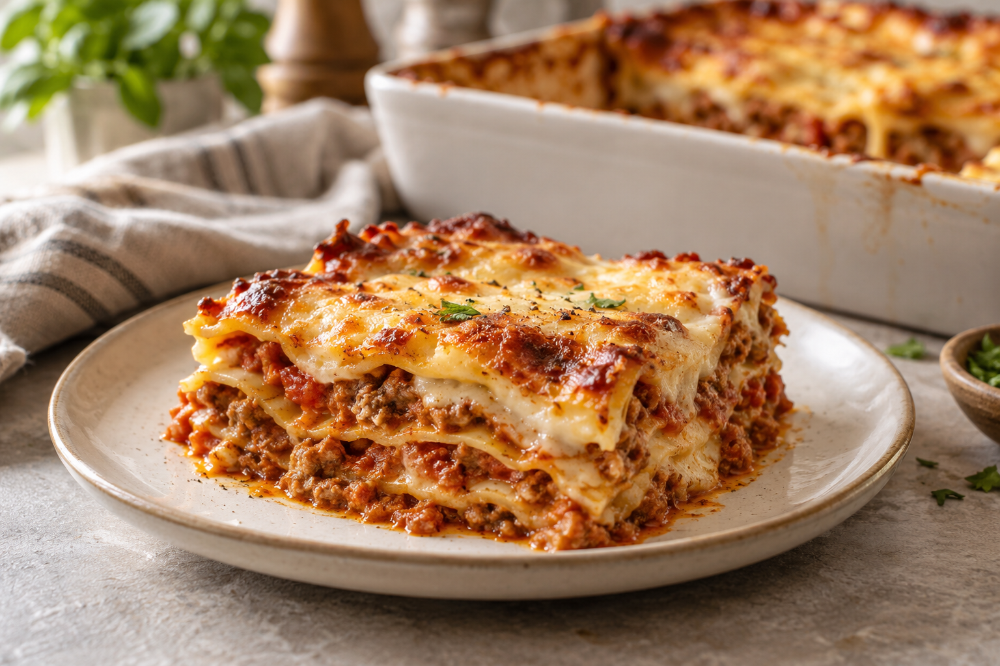

Home
Lassagna

Description
A homemade lasagna with layers of pasta, a rich meat and tomato filling, and creamy béchamel sauce. The melted cheese topping adds a golden, crispy finish.
Ingredients
- 12 lasagna sheets.
- 500 g ground beef, or a mixture of ground beef and pork.
- 700 g crushed tomatoes.
- 1 onion.
- 1 carrot.
- 2 garlic cloves.
- 150 g grated mozzarella.
- 40 g grated Parmesan.
- Olive oil, salt, black pepper, and oregano.
For the béchamel sauce:
- 750 ml milk.
- 60 g butter.
- 60 g plain flour.
- Salt, black pepper, and nutmeg.
Steps
- Make the filling. Finely chop the onion, carrot, and garlic. Sauté in a little olive oil for 10 minutes. Add the ground meat and cook until well browned. Stir in the tomatoes, season with salt, pepper, and oregano, and simmer for 25-30 minutes.
- Make the béchamel. Melt the butter, stir in the flour, and cook for 2 minutes. Gradually add the milk, stirring constantly, until smooth and creamy. Season with salt, pepper, and nutmeg.
- Prepare the pasta. Cook or soak the lasagna sheets according to the package instructions.
- Assemble the lasagna. Spread a little béchamel over the bottom of a baking dish. Alternate layers of pasta, meat sauce, and béchamel. Finish with pasta, béchamel, and the grated cheeses.
- Bake and serve. Bake in a preheated oven at 180°C for 30–35 minutes. Briefly place under the grill if needed to brown the topping. Let rest for 10–15 minutes before slicing.